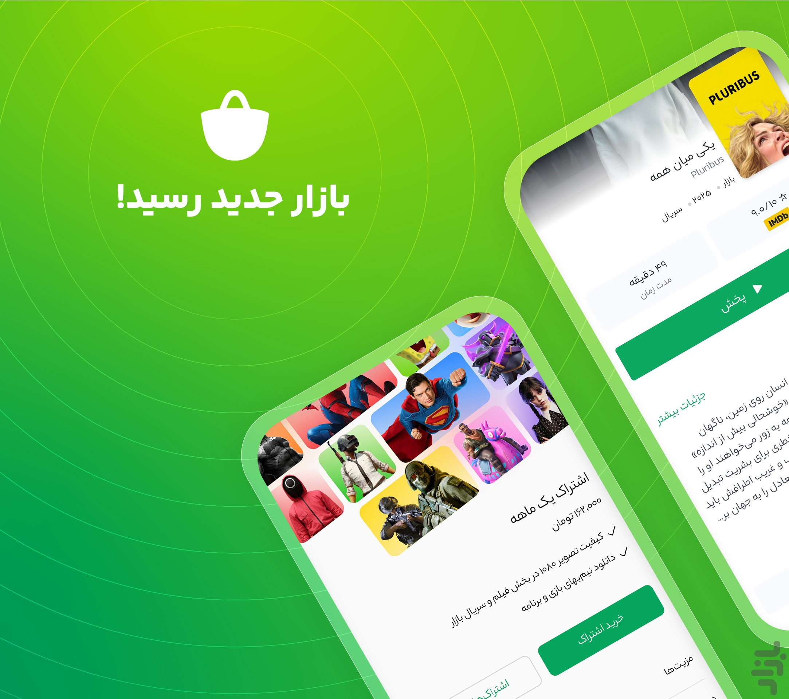
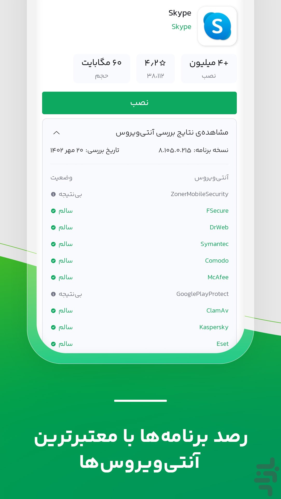

从工具箱到生态平台：bazaar 这些年到底在忙什么
一个诞生于伊朗的安卓应用商店，从最初的 APK 聚合器走到今天的支付+安全+儿童专区全套体系。版本没有公开 changelog，但从样本文档的措辞里能读出它的迭代节奏。
现在的 bazaar 是什么样？打开它的官网，你会看到一个已经长得很像样的安卓应用商店——不是那种只堆 APK 的简陋工具箱，而是有支付体系、有安全审核、有儿童专区的完整生态平台。最显眼的那个安全盾标识（سپر امنیت）挂在应用详情页，十款杀毒引擎逐项给判定报告，这套东西在第三方商店里不多见。

但如果你翻几年前的印象，它不是这样的。
来路：从哪里起步
bazaar文档没给它的首发时间线，也没写哪个版本加了哪个功能——它不像国际大厂那样把 changelog 整理得工工整整。这本身就是一个信号：bazaar 的迭代是务实驱动的，不是对外营销导向的。
能从样本文档的措辞里抠出的版本痕迹有几条：
自动更新是后来补上的。 更新机制那页写着"旧版本里自动更新多为关闭状态，需要手动到设置里开"——说明最早版本根本没有自动更新开关，连这个偏好设置都是后来才加的。最早的 bazaar 可能真的就是个 APK 聚合器：你挑应用、下载、安装，然后各应用自己管自己的更新。这和 Google Play 的"装了就不管"体验差了一条街。
里亚尔支付体系是一个大台阶。 账号与支付板块的钱包机制、应用内支付，这些功能一旦加上，就意味着它不再只是分发渠道——它开始抽成、开始接开发者、开始有商业闭环。没有支付的应用商店是工具，有了支付的才是平台。样本文档说"付费应用与内购都走里亚尔支付，经钱包或伊朗银行渠道扣款"，这套东西的落地本身就是一次架构级的升级。
安全盾的出现是转折点。 第三方应用商店最被质疑的就是安全，bazaar 的回应不是嘴上说说，而是做了一套"上架即扫描 + 详情页公开报告 + 持续复查 + 主动通知卸载"的闭环。Lookout、Kaspersky、Bitdefender、F-Secure、Dr.Web、Symantec、Comodo、McAfee、ClamAV、Eset——十款引擎同时跑，还把 Google Play Protect 的结果也拉进来展示。这套机制不是小修小补，是它试图建立信任的核心武器，而信任是第三方商店最稀缺的东西。

儿童专区是最近加的。 儿童模式的解锁码隔离、内容适龄过滤——这种功能只有当平台有了足够的用户基数、开始考虑家庭场景时才会出现。早几年的 bazaar 应该完全没想过这件事。
规律：团队一直在死磕什么
从这些版本痕迹里，能看出 bazaar 团队的优先级排序：
安全始终是第一位的。 安全盾不是做一次就完了，它是持续复查的——"扫描不是一次性的，上架后引擎持续复查，新威胁被识别后追加标记"。已装应用被识别为恶意时还会反向通知卸载。这套机制的投入不小（十款杀软的授权费、持续的扫描算力），但它是 bazaar 区别于其他 APK 聚合站的核心护城河。在第三方商店这个赛道里，谁先把安全做好，谁就先拿到持续用户。
伊朗本地化是硬约束。 里亚尔支付、伊朗银行渠道、伊朗手机号注册（境外号码收不到验证码）——这些东西让它在伊朗市场无可替代，但也天然限制了它的国际化。它的国际应用板块确实有"数千款来自世界各地的热门应用"，但支付和账号体系是完全本地化的。外国用户能装、能玩，但没法付费、没法用本地钱包。
自动更新一直修到现在。 样本文档里更新问题的速查表有四条：更新区空白、更新后数据丢失、更新反复失败、更新提示一直弹——这四条恰好对应自动更新机制的四个坑：更新源识别、签名校验、下载完整性、系统拦截绕过。说明这套机制上线后一直在修修补补，至今还没完全利索。
什么一直不管？iOS 版。 FAQ 里白纸黑字写了"没有也不会有 iOS 版"，给出的理由有三个：iOS 平台规则不允许、生态定位建立在安卓开放安装体系上、伊朗市场 iPhone 占比有限。官方口径说得很绝，不是"正在开发中"那种套话。这说明团队很清楚自己的资源边界——不在不可能的平台上浪费时间，把全部火力压在安卓上。
还有一条值得注意：老版本下载从来没做过。 FAQ 直接说"不提供老版本专门渠道，官方建议始终用最新版"。这和很多 APK 聚合站的"版本博物馆"做法完全反着来。背后的逻辑可能是安全考虑——老版本意味着老漏洞，而 bazaar 一直在强调安全。
预判：照这个路线走下去
从迭代规律推的话，bazaar 下一步大概率会做这几件事：
自动更新机制会继续磨。 那四条坑（更新源识别、签名校验、下载完整性、系统拦截绕过）还没填平，用户反馈的问题还在持续进来。这是体验上最痛的一个点，团队不会放着不管。
安全盾会加更多引擎和更实时的复查。 安全是它的招牌，招牌要一直擦亮。可能会有更多引擎加入名单，复查频率可能从"持续"提高到更实时的级别，甚至可能做应用内的安全自检。
开发者生态会继续补强。 有了支付体系之后，开发者是下一个要抓的群体。样本文档里提到了"上架审核"但没展开，开发者面板可能是下一个重点——让伊朗开发者愿意把应用放到 bazaar 上，而不是只从 Play 搬。
境外用户的边界会继续模糊。 现在境外用户能装、能浏览，但没法注册、没法付费。如果它想做更大的盘子，可能会放开境外注册（比如邮箱注册、跳过伊朗手机号要求），但支付体系本地化的问题不是短时间能解的。
写在后面
bazaar 不是那种一夜之间冒出来的明星产品，它的迭代是慢悠悠但方向明确的。从 APK 聚合器到有支付、有安全、有儿童专区的生态平台，每一步都是在补之前的短板，每一步都在巩固"伊朗市场最可信的安卓商店"这个定位。样本文档里没有 changelog 是个遗憾，但换个角度想——真正成熟的产品不会天天对外喊"我们又更新了什么"，它只管默默把体验做好。
如果你在找一个靠谱的伊朗应用商店，或者想从另一个角度看"第三方商店怎么建立信任"这件事，值得去它的详情页看看安全盾的扫描报告——十款引擎逐项判定的那种公开劲儿，不是随便哪个商店都敢做的。整理这套安全机制和版本观察的资料我分别同步到了三个仓库，GitHub、Gitee 和 GitCode 上都能找到。